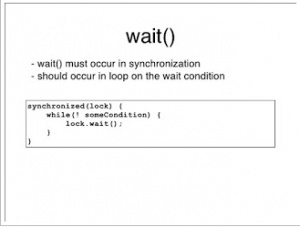

如何在 Java 中正确使用 wait, notify 和 notifyAll – 以生产者消费者模型为例¶
wait, notify 和 notifyAll，这些在多线程中被经常用到的保留关键字，在实际开发的时候很多时候却并没有被大家重视。本文对这些关键字的使用进行了描述。
在 Java 中可以用 wait、notify 和 notifyAll 来实现线程间的通信。。举个例子，如果你的Java程序中有两个线程——即生产者和消费者，那么生产者可以通知消费者，让消费者开始消耗数据，因为队列缓冲区中有内容待消费（不为空）。相应的，消费者可以通知生产者可以开始生成更多的数据，因为当它消耗掉某些数据后缓冲区不再为满。
我们可以利用wait()来让一个线程在某些条件下暂停运行。例如，在生产者消费者模型中，生产者线程在缓冲区为满的时候，消费者在缓冲区为空的时候，都应该暂停运行。如果某些线程在等待某些条件触发，那当那些条件为真时，你可以用 notify 和 notifyAll 来通知那些等待中的线程重新开始运行。不同之处在于，notify 仅仅通知一个线程，并且我们不知道哪个线程会收到通知，然而 notifyAll 会通知所有等待中的线程。换言之，如果只有一个线程在等待一个信号灯，notify和notifyAll都会通知到这个线程。但如果多个线程在等待这个信号灯，那么notify只会通知到其中一个，而其它线程并不会收到任何通知，而notifyAll会唤醒所有等待中的线程。
在这篇文章中你将会学到如何使用 wait、notify 和 notifyAll 来实现线程间的通信，从而解决生产者消费者问题。如果你想要更深入地学习Java中的多线程同步问题，我强烈推荐阅读Brian Goetz所著的《Java Concurrency in Practice | Java 并发实践》，不读这本书你的 Java 多线程征程就不完整哦！这是我最向Java开发者推荐的书之一。
monitor,synchronized, wait, notify 是任何对象都具有的同步工具。让我们先来了解他们
monitor¶
他们是应用于同步问题的人工线程调度工具。讲其本质，首先就要明确monitor的概念，Java中的每个对象都有一个监视器，来监测并发代码的重入。在非多线程编码时该监视器不发挥作用，反之如果在synchronized 范围内，监视器发挥作用。
wait/notify必须存在于synchronized块中。并且，这三个关键字针对的是同一个监视器（某对象的监视器）。这意味着wait之后，其他线程可以进入同步块执行。
当某代码并不持有监视器的使用权时（如图中5的状态，即脱离同步块）去wait或notify，会抛出java.lang.IllegalMonitorStateException。也包括在synchronized块中去调用另一个对象的wait/notify，因为不同对象的监视器不同，同样会抛出此异常。
synchronized单独使用：
代码块：如下，在多线程环境下，synchronized块中的方法获取了lock实例的monitor，如果实例相同，那么只有一个线程能执行该块内容
public class Thread1 implements Runnable {
Object lock;
public void run() {
synchronized(lock){
..do something
}
}
}
直接用于方法
相当于上面代码中用lock来锁定的效果，实际获取的是Thread1类的monitor。更进一步，如果修饰的是static方法，则锁定该类所有实例。
public class Thread1 implements Runnable { public synchronized void run() { ..do something } }
如何使用Wait¶
尽管关于wait和notify的概念很基础，它们也都是Object类的函数，但用它们来写代码却并不简单。如果你在面试中让应聘者来手写代码，用wait和notify解决生产者消费者问题，我几乎可以肯定他们中的大多数都会无所适从或者犯下一些错误，例如在错误的地方使用 synchronized 关键词，没有对正确的对象使用wait，或者没有遵循规范的代码方法。说实话，这个问题对于不常使用它们的程序员来说确实令人感觉比较头疼。
第一个问题就是，我们怎么在代码里使用wait()呢？因为wait()并不是Thread类下的函数，我们并不能使用Thread.call()。事实上很多Java程序员都喜欢这么写，因为它们习惯了使用Thread.sleep()，所以他们会试图使用wait() 来达成相同的目的，但很快他们就会发现这并不能顺利解决问题。正确的方法是对在多线程间共享的那个Object来使用wait。在生产者消费者问题中，这个共享的Object就是那个缓冲区队列。
第二个问题是，既然我们应该在synchronized的函数或是对象里调用wait，那哪个对象应该被synchronized呢？答案是，那个你希望上锁的对象就应该被synchronized，即那个在多个线程间被共享的对象。在生产者消费者问题中，应该被synchronized的就是那个缓冲区队列。（我觉得这里是英文原文有问题……本来那个句末就不应该是问号不然不太通……）
永远在循环（loop）里调用 wait 和 notify，不是在 If 语句
现在你知道wait应该永远在被synchronized的背景下和那个被多线程共享的对象上调用，下一个一定要记住的问题就是，你应该永远在while循环，而不是if语句中调用wait。因为线程是在某些条件下等待的——在我们的例子里，即“如果缓冲区队列是满的话，那么生产者线程应该等待”，你可能直觉就会写一个if语句。但if语句存在一些微妙的小问题，导致即使条件没被满足，你的线程你也有可能被错误地唤醒。所以如果你不在线程被唤醒后再次使用while循环检查唤醒条件是否被满足，你的程序就有可能会出错——例如在缓冲区为满的时候生产者继续生成数据，或者缓冲区为空的时候消费者开始小号数据。所以记住，永远在while循环而不是if语句中使用wait！我会推荐阅读《Effective Java》，这是关于如何正确使用wait和notify的最好的参考资料。
基于以上认知，下面这个是使用wait和notify函数的规范代码模板：
// The standard idiom for calling the wait method in Java
synchronized (sharedObject) {
while (condition) {
sharedObject.wait();
// (Releases lock, and reacquires on wakeup)
}
// do action based upon condition e.g. take or put into queue
}
就像我之前说的一样，在while循环里使用wait的目的，是在线程被唤醒的前后都持续检查条件是否被满足。如果条件并未改变，wait被调用之前notify的唤醒通知就来了，那么这个线程并不能保证被唤醒，有可能会导致死锁问题。
Java wait(), notify(), notifyAll() 范例¶
下面我们提供一个使用wait和notify的范例程序。在这个程序里，我们使用了上文所述的一些代码规范。我们有两个线程，分别名为PRODUCER（生产者）和CONSUMER（消费者），他们分别继承了了Producer和Consumer类，而Producer和Consumer都继承了Thread类。Producer和Consumer想要实现的代码逻辑都在run()函数内。Main线程开始了生产者和消费者线程，并声明了一个LinkedList作为缓冲区队列（在Java中，LinkedList实现了队列的接口）。生产者在无限循环中持续往LinkedList里插入随机整数直到LinkedList满。我们在while(queue.size == maxSize)循环语句中检查这个条件。请注意到我们在做这个检查条件之前已经在队列对象上使用了synchronized关键词，因而其它线程不能在我们检查条件时改变这个队列。如果队列满了，那么PRODUCER线程会在CONSUMER线程消耗掉队列里的任意一个整数，并用notify来通知PRODUCER线程之前持续等待。在我们的例子中，wait和notify都是使用在同一个共享对象上的。
package me.wenchao.javabasic.thread;
/**
* @Author wenchaofu
* @DATE 10:45 2018/5/4
* @DESC
*/
import java.util.LinkedList;
import java.util.Queue;
import java.util.Random;
/**
* Simple Java program to demonstrate How to use wait, notify and notifyAll()
* method in Java by solving producer consumer problem.
*
* @author Javin Paul
*/
public class ThreadNotify {
public static void main(String args[]) {
System.out.println("How to use wait and notify method in Java");
System.out.println("Solving Producer Consumper Problem");
Queue<Integer> buffer = new LinkedList<>();
int maxSize = 10;
Thread producer = new Producer(buffer, maxSize, "PRODUCER");
Thread consumer = new Consumer(buffer, maxSize, "CONSUMER");
producer.start();
consumer.start();
}
}
/**
* Producer Thread will keep producing values for Consumer
* to consumer. It will use wait() method when Queue is full
* and use notify() method to send notification to Consumer
* Thread.
*
* @author WINDOWS 8
*/
class Producer extends Thread {
private Queue<Integer> queue;
private int maxSize;
public Producer(Queue<Integer> queue, int maxSize, String name) {
super(name);
this.queue = queue;
this.maxSize = maxSize;
}
@Override
public void run() {
while (true) {
synchronized (queue) {
while (queue.size() == maxSize) {
try {
System.out.println("Queue is full, " + "Producer thread waiting for " + "consumer to take something from queue");
queue.wait();
} catch (Exception ex) {
ex.printStackTrace();
}
}
Random random = new Random();
int i = random.nextInt();
System.out.println("Producing value : " + i);
queue.add(i);
queue.notifyAll();
}
}
}
}
/**
* Consumer Thread will consumer values form shared queue.
* It will also use wait() method to wait if queue is
* empty. It will also use notify method to send
* notification to producer thread after consuming values
* from queue.
*
* @author WINDOWS 8
*/
class Consumer extends Thread {
private Queue<Integer> queue;
private int maxSize;
public Consumer(Queue<Integer> queue, int maxSize, String name) {
super(name);
this.queue = queue;
this.maxSize = maxSize;
}
@Override
public void run() {
while (true) {
synchronized (queue) {
while (queue.isEmpty()) {
System.out.println("Queue is empty," + "Consumer thread is waiting" + " for producer thread to put something in queue");
try {
queue.wait();
} catch (Exception ex) {
ex.printStackTrace();
}
}
System.out.println("Consuming value : " + queue.remove());
queue.notifyAll();
}
}
}
}
为了更好地理解这个程序，我建议你在debug模式里跑这个程序。一旦你在debug模式下启动程序，它会停止在PRODUCER或者CONSUMER线程上，取决于哪个线程占据了CPU。因为两个线程都有wait()的条件，它们一定会停止，然后你就可以跑这个程序然后看发生什么了（很有可能它就会输出我们以上展示的内容）。你也可以使用Eclipse里的Step into和Step over按钮来更好地理解多线程间发生的事情。 本文重点：
- 你可以使用wait和notify函数来实现线程间通信。你可以用它们来实现多线程（>3）之间的通信。
- 永远在synchronized的函数或对象里使用wait、notify和notifyAll，不然Java虚拟机会生成 IllegalMonitorStateException。
- 永远在while循环里而不是if语句下使用wait。这样，循环会在线程睡眠前后都检查wait的条件，并在条件实际上并未改变的情况下处理唤醒通知。
- 永远在多线程间共享的对象（在生产者消费者模型里即缓冲区队列）上使用wait。
- 基于前文提及的理由，更倾向用 notifyAll()，而不是 notify()。
这是关于Java里如何使用wait, notify和notifyAll的所有重点啦。你应该只在你知道自己要做什么的情况下使用这些函数，不然Java里还有很多其它的用来解决同步问题的方案。例如，如果你想使用生产者消费者模型的话，你也可以使用BlockingQueue，它会帮你处理所有的线程安全问题和流程控制。如果你想要某一个线程等待另一个线程做出反馈再继续运行，你也可以使用CycliBarrier或者CountDownLatch。如果你只是想保护某一个资源的话，你也可以使用Semaphore。